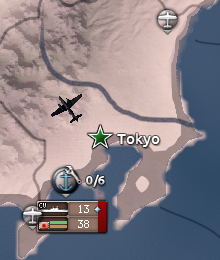
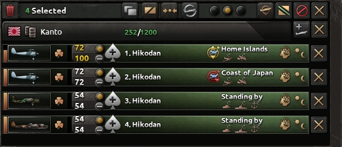
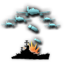
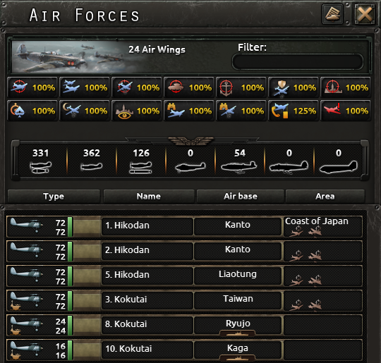
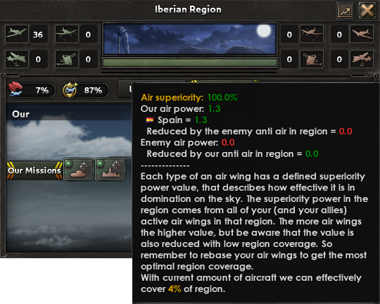
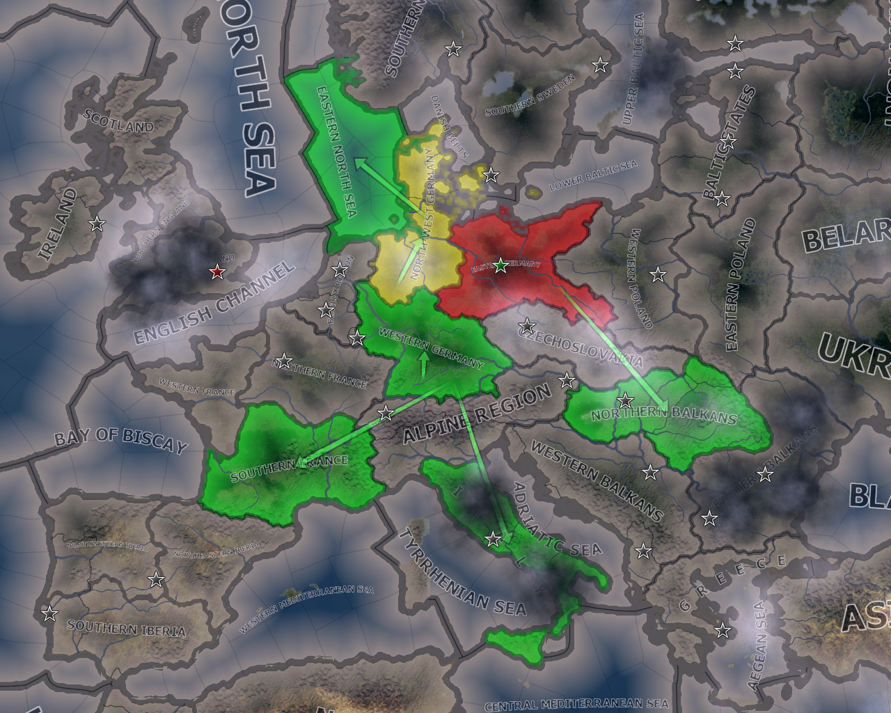

空战
原页面：Air warfare
空战指的是把航空队部署到战略地区，在那里它们可以执行任务，以敌方空军、陆军单位、海军单位或建筑为目标。鉴于空战是唯一能直接影响全部三种战斗类型（外加战略打击）的形式，玩家在制定成功战略时必须把空战纳入考量。
部署
空战在对应的战略空军地图模式中进行管理。大多数空中行动都以战略地区为规模单位运作。
空军基地

 飞机的运作需要空军基地。它们是州级建筑，可以在建造界面中建造或修复。与其他州级建筑不同，空军基地位于特定的省份（每个州固定），控制该省份决定了谁能使用这座空军基地。空军基地被占领时，飞机会自动转移到其他可用的空军基地，不会损失。
飞机的运作需要空军基地。它们是州级建筑，可以在建造界面中建造或修复。与其他州级建筑不同，空军基地位于特定的省份（每个州固定），控制该省份决定了谁能使用这座空军基地。空军基地被占领时，飞机会自动转移到其他可用的空军基地，不会损失。
容量

每座陆基 空军基地每级可无惩罚地容纳200[1]架飞机。空军基地的最高等级为10[2]，即最多2000架飞机。所有类型的飞机都可以驻扎在这些空军基地，包括舰载型。
空军基地每级可无惩罚地容纳200[1]架飞机。空军基地的最高等级为10[2]，即最多2000架飞机。所有类型的飞机都可以驻扎在这些空军基地，包括舰载型。
航空母舰可以在海上充当空军基地。它们可无惩罚容纳的飞机数量取决于其甲板空间属性。大多数航空母舰只能搭载舰载型飞机，不过冰上航母可以搭载所有类型的飞机。
空军基地的容量由盟友共享。空军基地的提示框会显示驻扎于此的飞机总数（以及拥有航空队的国家和飞机类型列表）。如果驻扎的飞机总数超过容量，每超出1%的飞机都会造成-2%[3]的超载惩罚。在50%超载时，惩罚达到-100%，使任何飞机都无法从该空军基地起飞。因此，管理可用容量并迅速把飞机从超载的空军基地转移出去非常重要。
空军基地会被战略轰炸任务 破坏。在修复之前，损伤会降低该基地可容纳的容量。
航母舰队
航空母舰可作为额外的浮动空军基地。其容量由舰船的飞行甲板规模属性决定。大多数航母只能搭载舰载型飞机，不过冰上航母可以搭载所有类型的飞机。
航空母舰上的飞机在未被指派任务时，和/或航空母舰被指派了任务时，会自动参与海战。航母上的航空队若待命（不在任何海军任务上）且位于港口之外，可以像其他飞机一样执行空中任务。这在其他基地射程不足时为两栖登陆提供近距空中支援、让未经训练的航空队进行训练以便在海战中表现更好，或从敌方轰炸航程之外猎杀没有护航的敌方海上巡逻轰炸机等方面都很有用。
航空母舰上驻扎过多飞机时，其作战能力所受的惩罚与陆基空军基地相同。不过，这一惩罚可以通过 
航空队

航空队是由飞机组成的编组，构成一个隶属于空军基地的空军单位。新航空队从空军基地界面部署。只有在飞机与服役人力都充足时才能创建航空队。
陆基航空队的规模为100架飞机，舰载航空队为10[4]。航空队中的所有飞机必须是同一类型或能够执行相同的任务；例如，不能把战斗机和轰炸机混编。不过，同一类型或相同任务下的不同型号飞机（如1936年战斗机和1940年战斗机）可以混编在同一支航空队中。
航空队的补充水平表示其飞机数量相对于满编的程度。如果当前飞机数量低于补充水平，只要该类型有足够的库存飞机，就会为其补充新飞机。如果没有库存，那么当军工生产线生产出正确装备类型的新飞机时才会进行补充。
在空军基地视图中，航空队可以拆分为多支同类型的航空队，也可以合并为一支。还有「重组」选项，可以更精细地控制同类型两支或多支航空队之间飞机的调配。
新建航空队后，飞机需要2[5]天才能抵达空军基地。航空队可以立即被指派到某个空中地区并下达任务，但在飞机抵达之前不会执行任务。航空队被重新指派到另一座空军基地（转场）时，需要时间飞往新基地。转场所需时间取决于新基地的距离以及编制中最慢机型的航速。在陆基空军基地与航空母舰之间转场也会对航空队施加48[6]小时的惩罚，使其无法获得任何补充。
如果解散一支航空队，其所有飞机都会返回装备库存，可用于部署到其他航空队。
任务
- 主条目：空中任务
航空队可以被指派执行各种任务。
空战
- 主条目：空战
制空权

制空权是指在某个战略地区中你的空军相对敌方空军的支配程度。制空权由正在积极执行任务的飞机提供，也取决于飞机类型。每类航空队都有固定的制空权数值，表示其夺取天空支配权的效率（见下表）。
| 飞机类型 | 制空权数值 |
|---|---|
| 重型战斗机 | 1.25 |
| 战斗机、舰载战斗机、喷气式战斗机、CAS、舰载CAS、NAV、舰载NAV、TAC、喷气式TAC | 1.00 |
| 战略轰炸机、喷气式战略轰炸机 | 0.01 |
每支航空队的空中力量等于其飞机数量乘以上表中的制空权数值，再乘以其任务效率。

一个地区的制空权由你的空中力量（加上盟友）与敌方空中力量的对比决定。这一比值以百分比表示，并会为地区涂上相应颜色（可使用战略空军地图模式查看）。颜色的含义见下表。这一比值是非线性的，在制空权较高时，你需要增加大量飞机才能把制空权提高1%。当4000架盟军飞机对500架敌机时，为盟军一方增加1000架飞机也只能让盟军制空权提高1.3个百分点。
| 颜色 | 制空权百分比 | 说明 |
| 红色 | < 40% | 敌方拥有制空权 |
| 黄色 | 40% - 60% | 争夺中的地区 |
| 绿色 | > 60% | 你（或盟友）拥有制空权 |
 防空也能降低某个空中地区的制空权。每级建筑（每个州最高5级）为对方增加-5[7]空中力量，最多增加-25。
防空也能降低某个空中地区的制空权。每级建筑（每个州最高5级）为对方增加-5[7]空中力量，最多增加-25。
在《诸神黄昏》中，任何 火箭基地向
火箭基地向 地对空任务发射导弹时，也会为其一方增加5[8]空中力量，数值为每个导弹航空队乘该队的空中攻击，每个发射场理论上最高可达15。实际上，可用于此类任务的此类装备只有 地对空导弹 I，而其空中攻击仅为 0.25，即每个现役导弹航空队折算1.25制空权，每个目标最高3.75制空权（按火箭基地计）；这还没有计入其因航程短而降低的任务效率。
地对空任务发射导弹时，也会为其一方增加5[8]空中力量，数值为每个导弹航空队乘该队的空中攻击，每个发射场理论上最高可达15。实际上，可用于此类任务的此类装备只有 地对空导弹 I，而其空中攻击仅为 0.25，即每个现役导弹航空队折算1.25制空权，每个目标最高3.75制空权（按火箭基地计）；这还没有计入其因航程短而降低的任务效率。
在战略地区中每拥有1点制空权优势，就会对敌方陆军作战的防御和突破施加空中支援惩罚（在战斗界面中称为敌方制空权），惩罚为-0.7%，在100%制空权时最高可达-35%[9]。例如，拥有60%制空权时，敌方将在防御和突破上承受-7%惩罚。因此，建议尽可能保持制空权。学说可以放大这一惩罚，把最终空中支援惩罚乘以1 + 学说加成；例如，对敌方的空中支援惩罚-10%，在拥有+30%的制空权（例如来自全部 战场支援空军学说）时会变成 -10% * (1 + 30%) = -13%。在没有修正的情况下，制空权在100%时还会对敌方移动速度施加最多-30%[10]的惩罚。防空、支援连防空以及其他师级防空来源可以把敌方制空权带来的惩罚削减到其未修正值的0.25x[11]，但效果并非线性，随着师级防空越来越多，效果会逐渐递减。[12]
在海域中拥有制空权可以把水面和水下探测能力提高最多+25%。[13]
制空权还会影响突袭和特殊任务，例如：
- 除非拥有至少70%[14]制空权，否则空降兵无法实施空降。
- 大多数空中突袭的成功率在0%制空权时降低至-10%，在100%制空权时提高至+10%。
- 炸锁、炸坝和油田突袭的成功率在0%制空权时降低至-20%，在100%制空权时提高至+20%。
- 核打击、热核打击、水雷破坏和导航机突袭的成功率在0%制空权时降低至-25%，在100%制空权时提高至+25%。
- 制空权最多可为突袭成功率的预估情报贡献50%。[15]
王牌飞行员
空战有几率产生王牌。一个航空队最多只能指派一名王牌。按国家分列的王牌列表见王牌飞行员名单。
| 技能等级 | 几率 | 战斗机王牌 | （战略）轰炸机王牌 | 支援（CAS、TAC 或 NAV）王牌 |
|---|---|---|---|---|
| 「优秀」 | 0.9 |
|
|
|
| 「独特」 | 0.4 |
|
|
|
| 「天才」 | 0.05 |
|
|
|
这些效果会按航空队规模相对于100[16]架飞机的大小反向缩放，在2[17]架飞机时最高可达50倍。
一次出击后，航空队在两种情况下可能产生王牌：
- 该航空队在空对空作战中对敌方航空队造成伤害
- 该航空队对舰船造成的伤害点数多于自身在攻击中损失的点数
- 该航空队成功对敌方建筑造成伤害
每次发生这种情况，产生王牌的几率与航空队中的飞机数量呈二次方关系。几率为1%[18]加上航空队中每架飞机0.005%[19]，判定两次。对于满编的100架陆基航空队，最终总几率约为2.9775%。对于满编的10架舰载航空队，最终总几率约为2.0890%。
如果为已经拥有在世王牌的航空队产生新王牌，新产生的王牌会进入预备状态。否则，新产生的王牌会自动分配到该航空队。
当航空队在一次出击中损失至少一架飞机时，王牌就可能阵亡。发生这种情况的几率为0.5%[20]加上出击中每损失一架飞机0.001%[21]。王牌阵亡后，名义上仍分配在该航空队，但其头像上会显示棺材，且不再为航空队提供任何加成。只有当同一支航空队产生新王牌时，阵亡的王牌才会自动解除分配；如果预备队中有可以分配给这支有阵亡王牌的航空队的在世王牌，则必须手动分配。
「Strategy」
应对低任务效率
部署更多飞机可以在一定程度上弥补任务效率的下降，但把飞机驻扎在更靠近战略地区中心的位置，或使用航程更远的飞机，可能效率更高。
如果玩家在正在进攻的地区内不控制任何基地，就会相对控制着基地的敌人处于明显劣势。玩家可以：
- 选择战术轰炸机执行近距空中支援任务，而不是CAS，并使用航程更远的重型战斗机。
- 尽快占领敌方空军基地，以便把一些战斗机和CAS重新部署到那里。如果玩家占领了一个没有空军基地的州，尽快在那里建造自己的1级基地甚至也是值得的。这样就能把最多200架飞机的航空队重新部署到该地区内。
- 使用战略轰炸机轰炸敌方建筑，包括空军基地。这可能对其空军基地造成足够损伤，通过降低敌方任务效率来「扳平局面」。但这只有在敌方空军基地已接近满容量时才可能奏效。
- 如果该地区有海岸可供（安全）锚泊舰队，使用航母舰队也会非常有用。特别是在由海军登陆执行对该地区的进攻时。航母舰队可以同时承担保护运输船队和提供舰炮支援等多重角色。
- 放弃用玩家的战斗机争夺制空权，只依靠拦截任务。执行拦截任务的战斗机只有在发现目标时才会起飞攻击轰炸机航空队。这能减少玩家战斗机的损失。不过，这会把战斗中的制空权加成让给玩家的敌人。
参考资料
- ↑
NDefines.NBuildings.AIRBASE_CAPACITY_MULT = 200中的 定义文件。 - ↑ 来自游戏文件 \Hearts of Iron IV\common\buildings\00_buildings.txt
- ↑
NDefines.NAir.CAPACITY_PENALTY = 2中的 定义文件。 - ↑
NDefines.NAir.CARRIER_SIZE_STAT_INCREMENT = 10中的 定义文件。 - ↑
NDefines.NAir.AIR_DEPLOYMENT_DAYS = 2中的 定义文件。 - ↑
NDefines.NAir.REINFORCEMENT_DISABLING_DURATION_IN_LAND_CARRIER_TRANSFER = 48中的 定义文件。 - ↑
NDefines.NBuildings.ANTI_AIR_SUPERIORITY_MULT = 5中的 定义文件。 - ↑
NDefines.NBuildings.SAM_MISSION_SUPERIORITY = 5中的 定义文件。 - ↑
NDefines.NMilitary.ENEMY_AIR_SUPERIORITY_IMPACT = -0.35中的 定义文件。 - ↑
NDefines.NMilitary.ENEMY_AIR_SUPERIORITY_SPEED_IMPACT = -0.3中的 定义文件。 - ↑
NDefines.NMilitary.ENEMY_AIR_SUPERIORITY_DEFENSE = 0.75中的 定义文件 - ↑
NDefines.NMilitary.ENEMY_AIR_SUPERIORITY_DEFENSE_STEEPNESS = 625中的 定义文件 - ↑
NDefines.NNavy.DETECTION_CHANCE_MULT_AIR_SUPERIORITY_BONUS = 0.25中的 定义文件 - ↑
NDefines.NCountry.PARADROP_AIR_SUPERIORITY_RATIO = 0.7中的 定义文件。 - ↑
NDefines.NRaids.TARGET_INTEL_PER_AIR_SUPERIORITY = 0.5中的 定义文件 - ↑
NDefines.NAir.ACE_WING_SIZE = 100中的 定义文件。 - ↑
NDefines.NAir.ACE_WING_SIZE_MAX_BONUS = 2中的 定义文件。 - ↑
NDefines.NAir.ACE_EARN_CHANCE_BASE = 0.01中的 定义文件。 - ↑
NDefines.NAir.ACE_EARN_CHANCE_PLANES_MULT = 0.005中的 定义文件。 - ↑
NDefines.NAir.ACE_DEATH_CHANCE_BASE = 0.005中的 定义文件。 - ↑
NDefines.NAir.ACE_DEATH_CHANCE_PLANES_MULT = 0.001中的 定义文件。
| 政治 | 意识形态 • 阵营 • 国策 • 理念 • 政府 • 傀儡国 • 流亡政府 • 外交 • 世界紧张度 • 内战 • 占领 • 力量均势 |
| 生产 | 贸易 • 生产 • 建造 • 装备 • 燃料 • 军工组织 • 国际市场 |
| 科研与科技 | 科研 • 步兵科技 • 支援连科技 • 装甲科技（也包括 未拥有绝不后退）• 火炮科技 • 陆军学说 • 特种部队学说 • 海军科技（也包括 未拥有全民持枪）• 海军支援科技 • 海军学说 • 空军科技（也包括 未拥有以血盟誓）• 空军学说 • Engineering科技 • Industry科技 • 特殊项目 • 科学家 |
| 军事与战争 | 战争 • 和平会议 • 陆军单位 • 陆战 • 师编制设计 • 坦克设计 • 陆军编制器 • 集团军 • 指挥官 • 作战计划 • 战斗战术 • 舰船 • 舰船设计（伦敦海军条约）• 海战 • 飞机设计 • 空战 • 经验 • 军官团 • 损耗与事故 • 后勤 • 人力 • 核弹 • 突袭 |
| 间谍活动 | 情报 • 情报机构 • 特工 • 任务 • 行动 |
| 地图 | 地图 • 省份 • 地形 • 天气 • 州 |
| 事件与决议 | 事件 • 决议 |